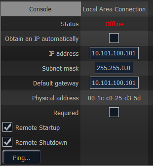

These are the settings that determine the method to get an IP address and/or the actual IP address information that Element uses for network communication.

This reports if the port is “Online” (configured, connected to a network and operational). It reports as “Offline” if any one of the above conditions is not true.
Note: ETC recommends the use of a static IP address for compatibility with other ETC devices, though the needs of your particular installation may vary.
Clicking in the enable box will set the desk to get its IP address dynamically from a DHCP server. While the desk is starting, it will ask for an IP address from a DHCP server. If one responds, it will use the assigned IP address.
If no DHCP server is available, the desk will default to a self-generated link-local IP address in the range of 169.254.x.y. The IP address used by the desk in this configuration may change dynamically as needed. A change should typically only occur when there are changes to the network configuration or to resolve an IP address conflict.
Enabling or disabling the DHCP setting will require you to reboot the desk for the new setting to take affect.
Note: You cannot set the desk to receive an IP address via DHCP and act as a DHCP server at the same time. It can either send dynamic addresses or receive them, but not both at the same time.
If DHCP is disabled, you set the IP address here. This is a static IP address and will remain set until changed by a user.
The following is a list of the default IP addresses:
| Console | Port 1 | Port 2 |
|---|---|---|
| Eos | 10.101.90.101 | NA |
| Eos RPU | 10.101.95.101 | NA |
| RVI | 10.101.85.101 | NA |
| Eos Ti | 10.101.92.101 | 192.168.92.101 |
| Gio | 10.101.91.101 | 192.168.91.101 |
| Gio @ 5 | 10.101.98.101 | 192.168.98.101 |
| RPU3 | 10.101.93.101 | 192.168.93.101 |
| RVI3 | 10.101.86.101 | 192.168.86.101 |
| Ion | 10.101.100.101 | NA |
| Ion Xe | 10.101.100.20 | 192.168.100.20 |
| Ion Xe 20 | 10.101.100.30 | 192.168.100.30 |
| Ion Xe RPU | 10.101.96.201 | 192.168.96.201 |
| Element | 10.101.97.101 | NA |
| Element 2 | 10.101.99.101 | 192.168.99.101 |
If DHCP is enabled, this field will display the IP address that is being used by the desk (whether it is served via DHCP or a self-generated link-local IP address).
If DHCP is disabled, you set the subnet mask here. This is a static setting and will remain set until changed by a user. The default subnet mask is 255.255.0.0.
If DHCP is enabled, this field will display the subnet mask that is being used by the desk (whether it is served via DHCP or a self-generated link-local IP address).
If DHCP is disabled, you set the gateway IP address here. This is a static gateway IP address and will remain set until changed by a user.
The following is a list of the default Gateway addresses:
| Console | Port 1 | Port 2 |
|---|---|---|
| Eos | 10.101.90.101 | NA |
| Eos RPU | 10.101.95.101 | NA |
| RVI | 10.101.85.101 | NA |
| Eos Ti | 10.101.92.101 | 192.168.92.101 |
| Gio | 10.101.91.101 | 192.168.91.101 |
| Gio @ 5 | 10.101.98.101 | 192.168.98.101 |
| RPU3 | 10.101.93.101 | 192.168.93.101 |
| RVI3 | 10.101.86.101 | 192.168.86.101 |
| Ion | 10.101.100.101 | NA |
| Ion Xe | 10.101.100.20 | 192.168.100.20 |
| Ion Xe 20 | 10.101.100.30 | 192.168.100.30 |
| Ion Xe RPU | 10.101.96.201 | 192.168.96.201 |
| Element | 10.101.97.101 | NA |
| Element 2 | 10.101.99.101 | 192.168.99.101 |
If DHCP is enabled, this field will display the gateway IP address that is being used by the desk (whether it is served via DHCP or a self-generated link-local IP address).
The physical address is the MAC address. This address is a unique identifier and cannot be modified.